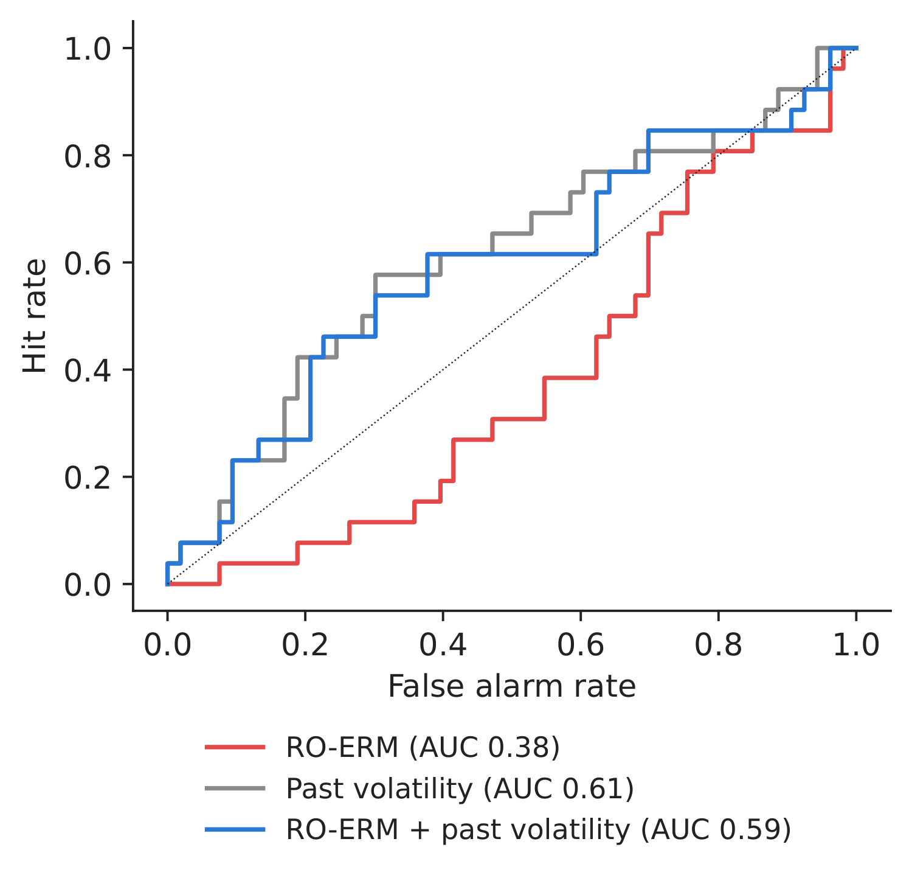
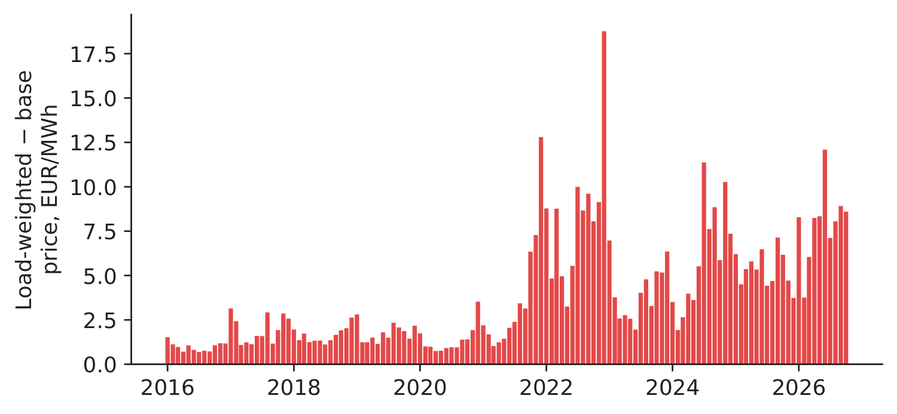
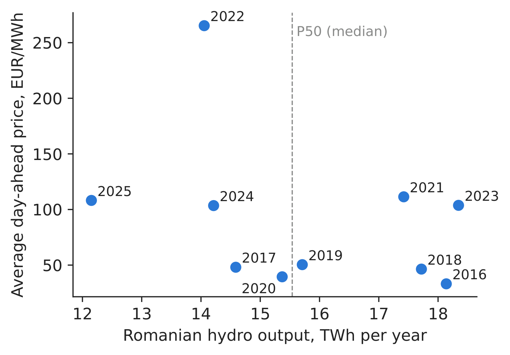
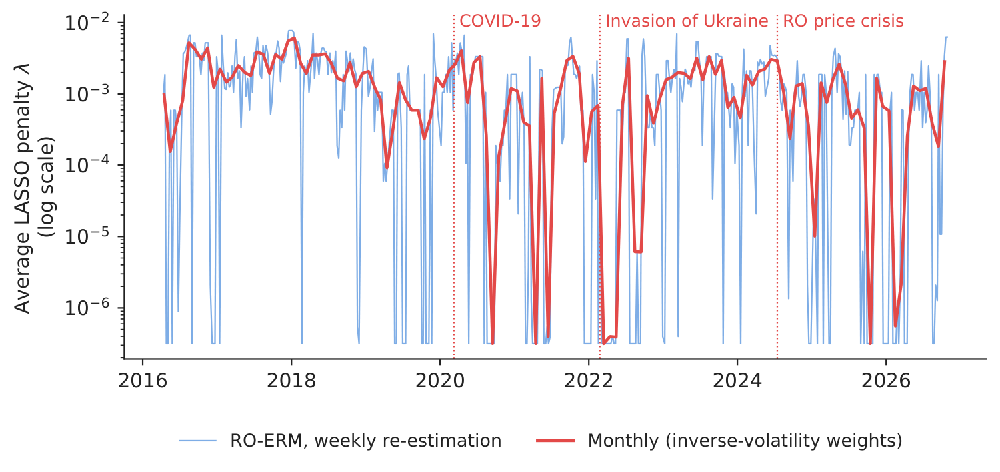

Case study 4 · Lecture 4
A risk meter for energy companies — systemic stress, price–volume risk and the dry year
Prof. dr. Daniel Traian PELE
Bucharest University of Economic Studies, Department of Statistics and Econometrics
Romanian Academy, Institute for Economic Forecasting
The paper
Toma, F.-M., Dima, D.-M., Grecu, R., Pele, D. T. & Lessmann, S. (2026). Energy Financial Risk Meter: Systemic risk in the EU energy sector. SSRN (Social Science Research Network) Working Paper 6985301. doi:10.2139/ssrn.6985301
Materials
The business question
The risk committee of a Romanian energy group meets every month. It wants one dashboard that answers three questions. Is the energy sector as a whole under stress (so that funding, collateral and counterparties may suddenly become a problem)? How much does our supply business lose because customers consume most when power is expensive (price–volume risk)? And how much would a dry year cost our hydro business if we have already sold the expected output forward? The first question is the subject of the paper; the other two are the risks that make energy companies different from banks.
What the paper did
Question. Can a sector-specific systemic-risk indicator be built for the EU (European Union) energy sector, how does geopolitical risk transmit to it, and does energy-sector risk transmit to equity and credit markets (Sections 1–2.4)? Can a risk manager observing the indicator today form better expectations about adverse outcomes than with broad stress indices alone (Section 4.8)?
Data. Daily returns and market capitalisation of 100 European energy companies plus European factors (TTF, Title Transfer Facility gas and Brent futures, Brent spot, STOXX Europe 600 Oil & Gas, STOXX Europe 600, VSTOXX, volatility index of the EURO STOXX 50, crude-oil stocks), LSEG (London Stock Exchange Group), April 2016 – April 2026; the Caldara–Iacoviello daily geopolitical risk index (GPRD), 5-year CDS (credit default swap) spreads, and the ECB (European Central Bank)'s Composite Indicator of Systemic Stress (CISS) as benchmark (Section 3.3).
Main findings of the paper.
- “The EFRM [Energy Financial Risk Meter] index captures major systemic events in the energy markets, namely the 2020 COVID [coronavirus disease] pandemic and the 2022 Russia–Ukraine war” (Abstract). Bai–Perron tests find breaks in the monthly EFRM in February 2020 and July 2021, and the EFRM leads geopolitical risk by about seven months (Section 3.4).
- A previously dormant geopolitical channel switched on with the invasion: the response of the EFRM to a geopolitical shock moves from \(-0.2146\) pp before the war to \(+1.3082\) pp after it (TVP-VAR, time-varying parameter vector autoregression, Section 4.1.2), while transmission from energy risk to the STOXX 600 is attenuated by “approximately 60 %” (Section 4.2.1).
- Out of sample, predicting months of high energy-sector volatility: EFRM + CISS has AUC (area under the ROC curve, ROC = receiver operating characteristic) 0.731, EFRM alone 0.708, CISS alone 0.673 (58 months, 11 events; Table “Out-of-Sample Probit Results”, Section 4.8.3). The EFRM is built to monitor systemic stress; this exercise measures its additional predictive information (Section 4.8).
The method, step by step
Intuition first
On a bad day, is a company hurt alone or together with the others? For each company we explain its worst days by the returns of all the other companies and by oil and gas. When everything is tangled, many links matter and the estimation needs a stronger “brake” (a larger penalty \(\lambda\)) to stay stable. The average brake across companies is the risk meter.
For company \(j\) and a rolling window of \(n\) days, the paper estimates the \(\tau=5\,\%\) quantile regression (Section 3.1.1)
where \(X_{j,t}\) is the log return of company \(j\), \(\mathbf A_{j,t}\) stacks the returns of the other \(J-1\) companies and the \(M\) macro factors, \(\rho_\tau\) is the check (“pinball”) loss that targets the 5 % quantile, and \(\|\boldsymbol\beta_j\|_1=\sum_k|\beta_{j,k}|\) is the LASSO (Least Absolute Shrinkage and Selection Operator) penalty that sets weak links to zero. \(\lambda_j\) is chosen by minimising \(\mathrm{GACV}=\sum_t\rho_\tau(\hat u_t)/(n-\mathrm{df})\), with df the number of non-zero coefficients. The index is \(\mathrm{EFRM}_t=\frac1J\sum_j\lambda_{j,t}\); monthly values weight days by \(1/\sigma_t\), the inverse of the 5-day volatility of the index (Section 3.1.2). Energy-specific risks need no model: the price–volume premium of a month is the load-weighted price minus the base price, \(\sum_h p_hL_h/\sum_hL_h-\frac1H\sum_hp_h\); the dry-year buy-back cost of a producer that sold its median (P50) hydro output forward is \(\max(0,\mathrm{P50}-Q_y)\times\bar p_y\), with \(Q_y\) the output and \(\bar p_y\) the average spot price of year \(y\).
In practice
A systemic meter needs a broad cross-section of companies; for a single Romanian group, the risks that actually move the profit and loss are the shape of demand and the weather. Put them on the same dashboard, measured in EUR.
Replicate it yourself
Notebook C4_notebook_EN.ipynb: (A) a “RO-ERM [energy risk meter for Romanian companies]” from OMV Petrom, Romgaz and Nuclearelectrica with Brent and Henry Hub as factors, 2,800 trading days, 250-day windows re-estimated every 5 days (510 windows, April 2016–October 2026); the window length is our choice.
(B) An expanding-window probit for “next month's volatility above the 75th percentile”, 79 out-of-sample months (26 events); no CISS in our data, so past volatility is the benchmark.
(C) Hourly prices and load for the price–volume premium; daily hydro output (reservoir + run-of-river) for the dry-year cost.

Figure 1. The RO-ERM: average LASSO penalty across the three companies.
Source: our estimates on EODHD (EOD Historical Data, a market-data provider) and Yahoo Finance data, April 2016–October 2026.

Figure 2. Out-of-sample ROC curves for turbulent months.
Source: our probit models; 79 months.
Table 1. Early warning of a turbulent next month (AUC = area under the ROC curve, 0.5 = no discrimination; Brier skill score \(>0\) = better than the base rate). Best in bold.
| Predictor of a turbulent next month | AUC | Brier skill score |
|---|---|---|
| RO-ERM alone | 0.382 | \(-\)0.029 |
| Past volatility alone | 0.612 | 0.003 |
| RO-ERM + past volatility | 0.593 | \(-\)0.012 |
Source: our computation. Paper (100 EU firms, CISS benchmark): EFRM 0.708, CISS 0.673, EFRM + CISS 0.731.
What our data show (A–B). Our three-company meter peaks in December 2017; it is higher in March–June 2020 (2.583 \(\times10^{-3}\)) than in 2018–2019 (1.852), and lower during the 2022 war (0.894). As an early warning it reaches AUC 0.382, while past volatility alone reaches 0.612. With only four covariates, GACV (generalised approximate cross-validation) chooses (almost) no penalty in 54 % of the firm-windows, so \(\lambda\) carries little information in a network this small. The managerial lesson: breadth of the cross-section matters — a systemic meter needs a broad set of firms, as in the paper's 100-company design.

Figure 3. Monthly price–volume premium: load-weighted minus base price.
Source: energy-charts.info; hourly 2016–Oct 2026.

Figure 4. Annual hydro output vs average spot price.
Source: energy-charts.info; 2016–2025.
Table 2. Dry-year risk of a hydro producer that sold its median output (P50 = 15.54 TWh) forward. Largest cost in bold.
| Year | Hydro output, TWh | Spot price, EUR/MWh | Shortfall vs P50, TWh | Buy-back cost, mil. EUR |
|---|---|---|---|---|
| 2016 | 18.14 | 33.2 | 0.00 | 0 |
| 2017 | 14.59 | 48.1 | 0.95 | 46 |
| 2018 | 17.72 | 46.4 | 0.00 | 0 |
| 2019 | 15.71 | 50.4 | 0.00 | 0 |
| 2020 | 15.37 | 39.5 | 0.17 | 7 |
| 2021 | 17.42 | 111.4 | 0.00 | 0 |
| 2022 | 14.05 | 265.3 | 1.49 | 394 |
| 2023 | 18.35 | 103.7 | 0.00 | 0 |
| 2024 | 14.21 | 103.5 | 1.33 | 137 |
| 2025 | 12.15 | 108.2 | 3.39 | 367 |
Source: our computation on energy-charts.info data (national hydro output, all producers).
Energy-specific risks (C). Serving the household profile with flat baseload costs a premium of 3.6 % on average in 2016–2019, 8.4 EUR/MWh (3.3 %) in 2022 and 5.4 EUR/MWh (5.2 %) in 2025 — the cost of evening peaks and of solar middays. Hydro output and price are negatively related (correlation \(-\)0.36): dry years are expensive years. Having sold P50 forward, a producer of the size of the whole Romanian hydro fleet would have had to buy back 1.49 TWh in 2022 for about 394 million EUR, and 3.39 TWh in 2025 for about 367 million EUR. Decision number: the worst year in ten (2022) cost 394 million EUR — this sets the size of the liquidity buffer, and argues for selling forward less than P50.
Discussion questions for managers
- What coverage of firms and market factors would your risk committee require from a systemic indicator? How would you combine a European sector meter with your company's own exposures?
- The paper finds the meter rising months before geopolitical risk (from July 2021). What concrete actions could a company take in such a lead time?
- Who in your company owns the price–volume premium: sales, trading or risk? How is it priced into retail offers?
- Using the hydro table, how much of the expected output would you sell forward one year ahead (P50, P75, P90)? What is the trade-off?
- Which of the three risks would you report to the board every month, and in which unit (index points, EUR, MWh)?
Limitations of the classroom replication
(i) Our meter: 3 companies, no TTF daily, no GPRD or CISS, window length chosen by us; it is a teaching illustration, not the EFRM. (ii) The hydro buy-back uses the national fleet and the annual average price; a producer buys back in specific months at specific prices. (iii) The price–volume premium uses national load, not a supplier's own portfolio.
Case 4 at a glance
- QuestionIs the energy sector under stress, and what do demand shape and dry years cost us?
- DataDaily SNP, SNG, SNN, Brent, Henry Hub 2015–2026; hourly price and load; daily hydro output.
- MethodLASSO quantile regression (\(\tau\)=5 %), average penalty; probit + AUC; price–volume and P50 buy-back.
- ResultPaper (100 firms): EFRM AUC 0.708; our 3-firm version: 0.382 — breadth matters. Dry year 2022: 394 mil. EUR.
- DecisionUse a broad EU meter for systemic stress; size liquidity by the dry-year and shape risks.

Source: our RO-ERM on EODHD and Yahoo Finance data, April 2016–October 2026.
Abbreviations
| AUC | area under the ROC curve, ROC = receiver operating characteristic |
|---|---|
| CDS | credit default swap |
| CISS | Composite Indicator of Systemic Stress |
| COVID | coronavirus disease |
| ECB | European Central Bank |
| EFRM | Energy Financial Risk Meter |
| EODHD | EOD Historical Data, a market-data provider |
| EU | European Union |
| GACV | generalised approximate cross-validation |
| GPRD | daily geopolitical risk index |
| LASSO | Least Absolute Shrinkage and Selection Operator |
| LSEG | London Stock Exchange Group |
| RO-ERM | energy risk meter for Romanian companies |
| ROC | receiver operating characteristic |
| SNG | stock-exchange ticker of Romgaz |
| SNN | stock-exchange ticker of Nuclearelectrica |
| SNP | stock-exchange ticker of OMV Petrom |
| TTF | Title Transfer Facility |
| TVP-VAR | time-varying parameter vector autoregression |
| VSTOXX | volatility index of the EURO STOXX 50 |
The text, numbers, charts and tables of this page are those of the case brief; every number is computed by the case notebook on the course data.